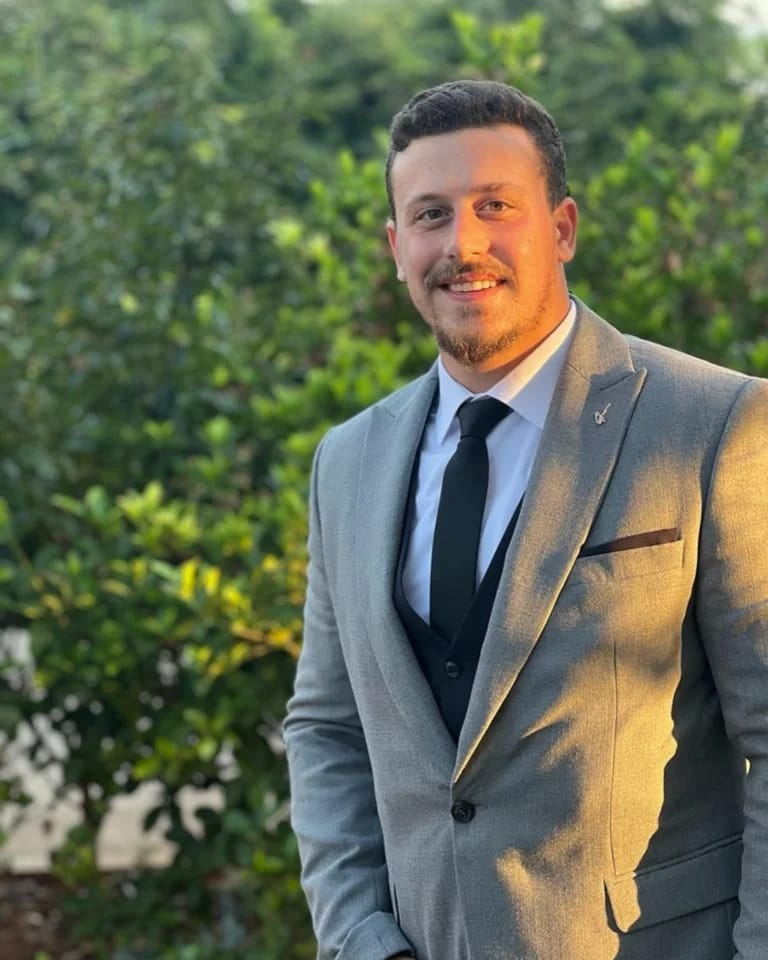

Paul Jneid

Summary
Achieve a position in your School to implement all the theoretical and applied studies I have conducted throughout my educational years at university and job experiences.
Obtain a challenging position with a professional school where my knowledge and experience accompanied with my enthusiasm and ambition can be used for mutual advantages.
Education
- Research Master 2 in Teaching Physics at the Secondary Level, Lebanese University, Faculty of Education, Furn El Chebbak. (2021-2024)
- Professional Master 1 in Teaching Physics at the Secondary Level, Lebanese University, Faculty of Education, Furn El Chebbak. (2020-2021)
- Bachelor’s Degree in Physics, Lebanese University, Faculty of Sciences, Fanar. (2016-2020)
- Lebanese Baccalaureate in General Sciences, Collège De La Salle Frère, Kfaryashit. (2013-2016)
Work Experience
Physics- Mathematics and Chemistry Teacher - Adventist School Bouchrieh
September 2022-Present
- Plan and implement educational activities and events.
- Focused professional development on inquiry-based instruction, classroom management, conferencing.
Physics and Mathematics Teacher - Santa Maria Centre d’étude
June 2022- December 2022
- Selecting and using training/instructional methods and procedures appropriate for the situation when learning or teaching new things.
- Providing extra support to students that require it, and more challenging tasks to those who are ahead of the class
Physics and Sciences Teacher - E.S.E.N Tanchia School
March 2022- May 2022
- Attend parent-teacher meetings.
- Develop and issue educational content including notes, tests, and assignments.
Mathematics Teacher - UN Job at Uruguay Public Mixed School- Achrafieh 1
March 2022- May 2022
- Analyzing the needs, strengths, and weaknesses of students and structuring lessons and assessments around them.
- Being aware of others' reactions and understanding why they react as they do.
Educator internship of Physics - The International School of Choueifat-Koura (SABIS)
April 2021-June 2021
- Using scientific rules and methods to solve problems.
- Understanding written sentences and paragraphs in work related documents.
Educator internship of Physics-Chemistry-Math - Sainte Thérèse Institute- Amioun
October 2020-April 2021
- Adjusting teaching methods to suit different groups of learners.
- Creating engaging, stimulating lesson plans, and asking frequent questions to make sure students are on track.
Physics-Math and Chemistry Teacher - Private Lessons
February 2018-Present
- Using logic and reasoning to identify the strengths and weaknesses of alternative solutions, conclusions or approaches to problems.
- Understanding the implications of new information for both current and future problem-solving and decision-making.
Skills
- Mastery of software: C language, Matlab, Microsoft Word, Microsoft Excel, Power Point, Active Inspire, Slack, Eschool, Microsoft Teams, Zoom : ★ ★ ★ ★
- Knowledge of physical theory and official exams program: ★ ★ ★ ★ ★
- Ability to do and explain laboratory experiments: ★ ★ ★ ★
- Experienced the role of a leader in “Scout of Lebanon Harf Ardeh Group”:★ ★ ★ ★
Awards and Certifications
- Teaching Certificate, Lebanese University, Faculty of Education, Furn El Chebbak. (October 2021)
- Certificate in Conversational English Skills, Tsinghua University. (December 2020)
- Delf B1, French Institute. (July 2018)
Other